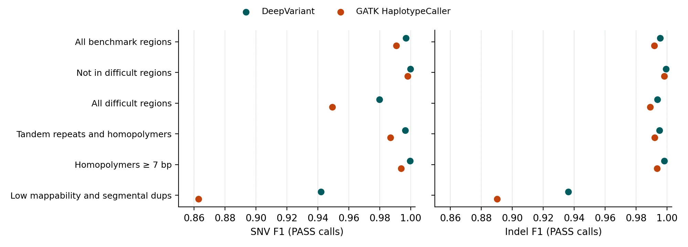

Clinical genomics · NGS · Pipelines
Germline variant calling benchmarked against GIAB HG002
A Nextflow pipeline from Illumina reads to germline SNVs and indels, with two callers, GATK HaplotypeCaller and DeepVariant, scored against the Genome in a Bottle truth set for HG002 with hap.py. The result is a validation report of the kind a clinical lab writes before using a pipeline on patient samples: overall accuracy, plus accuracy in the regions where variant calling is hard.

How do you know a variant caller is right?
A clinical genomics pipeline is only as good as its validation. Genome in a Bottle sequenced reference samples such as HG002 deeply with several technologies and published high-confidence truth calls, so a pipeline can be scored by recall and precision. But a single overall number hides where errors happen. GIAB’s genome stratifications split the genome into easy and difficult regions, so performance can be reported where it matters, in repeats and in regions that reads cannot map to uniquely.
From reads to a scored call set
- Reads and QC. The HG002 chr20 reads are converted back to paired FASTQ and trimmed with fastp.
- Alignment. BWA-MEM2, then samtools fixmate, sort and duplicate marking, with coverage from mosdepth.
- GATK. HaplotypeCaller scattered over eight windows, gathered and hard-filtered with the GATK best-practice thresholds for a single sample.
- DeepVariant. The WGS model on the same alignments.
- Benchmarking. hap.py against the GIAB v4.2.1 truth set within its benchmark regions, overall and in five stratifications.
Host tools are pinned in a conda environment. DeepVariant and hap.py run from versioned Docker images, and a test profile runs the whole pipeline on a 500 kb window in a few minutes.
Both callers are excellent in easy sequence
| Caller | Variant | Recall | Precision | F1 |
|---|---|---|---|---|
| DeepVariant | SNV | 0.9954 | 0.9983 | 0.9968 |
| DeepVariant | Indel | 0.9934 | 0.9975 | 0.9955 |
| GATK HaplotypeCaller | SNV | 0.9893 | 0.9921 | 0.9907 |
| GATK HaplotypeCaller | Indel | 0.9910 | 0.9925 | 0.9917 |
Outside GIAB’s difficult regions both callers are close to perfect, with SNV F1 0.9999 for DeepVariant and 0.9982 for GATK. The difference is concentrated in hard sequence. In low-mappability regions and segmental duplications, SNV F1 is 0.942 for DeepVariant and 0.863 for GATK. Overall, DeepVariant makes 124 false-positive SNVs against GATK’s 559. For a clinical pipeline, that is the case for reporting stratified performance rather than one headline number.
Limits worth knowing
- The reads were pre-selected to chr20 by a whole-genome alignment and are re-aligned to chr20 only. This slightly favours both callers compared with a genome-wide run.
- GATK is run without BQSR and with hard filters rather than VQSR, the usual choice for one sample. It is a fair baseline, not a tuned one.
- hap.py receives PASS calls with the genotype field only, because its bundled htslib can crash on DeepVariant’s FORMAT fields; scoring compares genotypes, so results are unaffected.